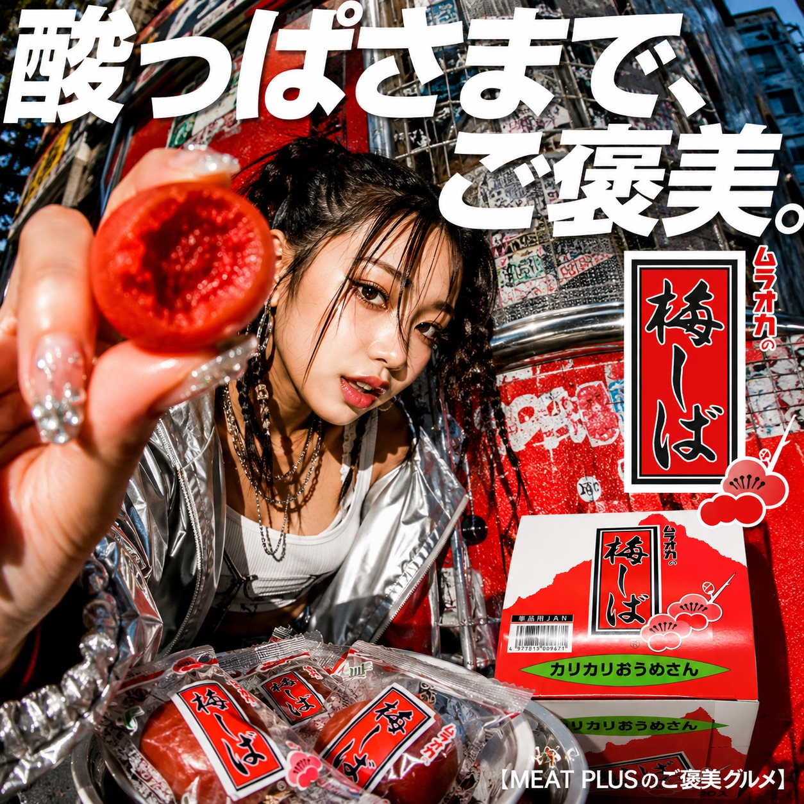
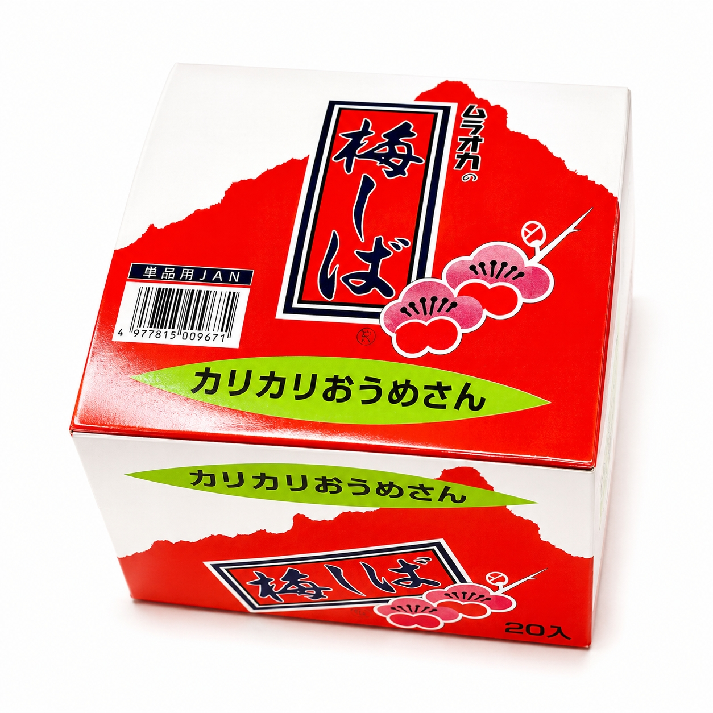
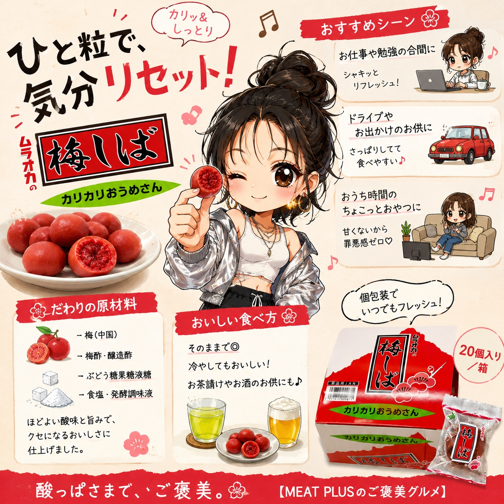

SCENE 01

k スイーツ・菓子
【カリッとした歯ごたえと甘酸っぱさがクセになる、懐かしの味。】
小腹が空いたとき、仕事や勉強の合間のリフレッシュに、ついつい手が伸びてしまう、あの懐かしい味。ムラオカの「梅しば」は、世代を超えて愛されるカリカリ梅の定番です。一粒口に運べば、カリッとした心地よい歯ごたえとともに、じゅわっと広がる絶妙な甘酸っぱさ。国産の梅酢にじっくりと漬け込み、独自の製法で仕上げることで、このクセになる味わいが生まれます。便利な個包装タイプなので、いつでもどこでも気軽に楽しめます。バッグに忍ばせてお出かけのお供に、オフィスの引き出しに常備して気分転換に。たっぷり20個入りなので、ご家族みんなで楽しんだり、仲間とシェアしたりするのもおすすめです。お茶請けやお酒のおつまみ、ドライブのお供など、様々なシーンで活躍する「梅しば」。あなたの日常に、おいしいアクセントを加えてみませんか。
公式サイトへ移動します。価格・在庫・配送条件は移動先で最終確認してください。


PRODUCT INFORMATION
梅(中国)、漬け原材料〔梅酢、醸造酢、ぶどう糖果糖液糖、食塩、発酵調味液〕/ソルピット、酒精、調味料(アミノ酸等)、酸味料、香料、着色料(赤102)、ビタミンB1
FAQ
原料の梅は中国産のものを使用しております。漬け込みや味付けなどの製造工程は、すべて日本の工場で行っておりますので、安心してお召し上がりください。
独自の製法でじっくりと漬け込むことで、梅の風味を活かしながら、特徴的なカリッとした食感を生み出しています。長年愛されてきたこだわりの歯ごたえをお楽しみください。
MEAT PLUS OFFICIAL SHOP
仕入れ・加工・梱包・発送まで自社で行うMEAT PLUSの公式オンラインショップでご注文いただけます。
公式オンラインショップで購入する